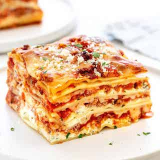

This lasagna recipe is very easy to make. Lasagna is one of my favorite Italian dishes and that's why this is one of my go to's for a fast and filling feast. It's great for the holiday's, gatherings, or a quick family meal. With the perfect blend of noddles, italian sausage, tomato sauce, mozzarella cheese, and ricotta cheese melting in your mouth. You simply can't say not to this perfect and simple recipe.
